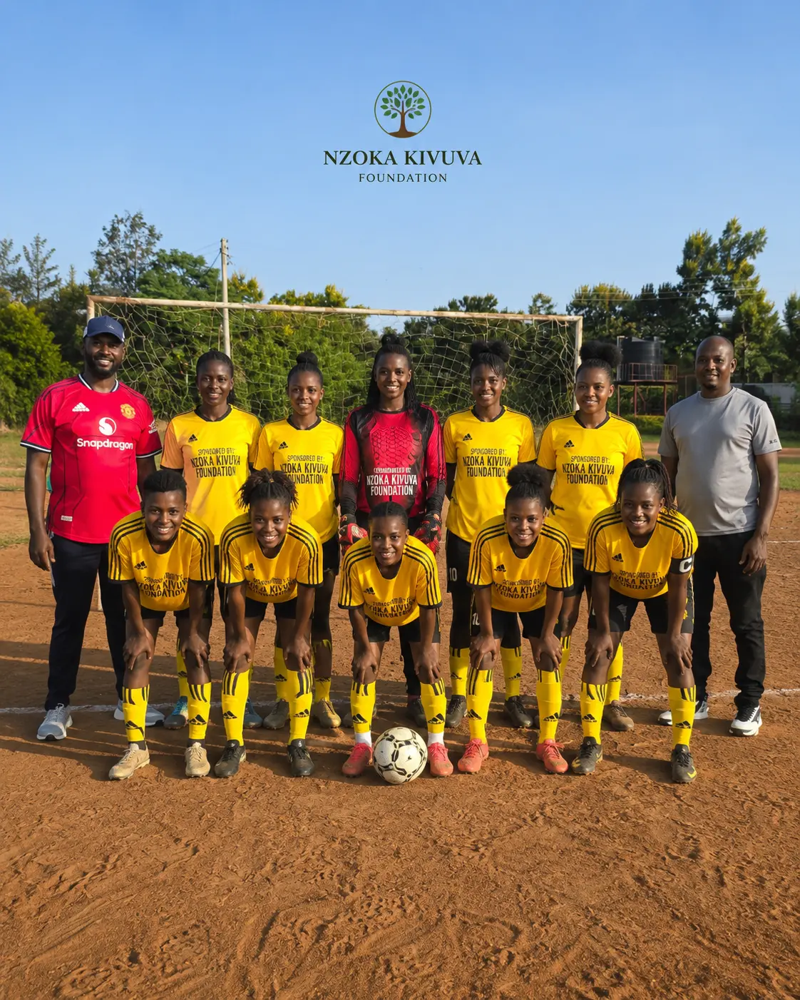

The Nzoka Kivuva Foundation celebrated a milestone achievement this month as 48 students from across Machakos County received sports-linked scholarships. The awards ceremony, held at the Mwala Community Hall, brought together educators, parents, and community leaders to honor academic excellence combined with sporting achievement.
The scholarships, valued at up to KSh 25,000 per student, cover tuition fees, learning materials, and sports equipment. Students were selected from 12 partner schools based on their academic performance, sports participation, and community involvement.

Empowering Youth Through Education and Sports
"These scholarships are about more than just financial support," said Advocate Nzoka Kivuva, Executive Director of the foundation. "They represent our commitment to showing young people that excelling in sports and academics go hand in hand. We want them to see that discipline on the field translates to discipline in the classroom."
"I never thought I could afford to continue my education. This scholarship has given me hope and a future."
The foundation plans to expand the scholarship program to 20 schools by the end of 2026, with a target of supporting 100 students annually. The program is funded through donations from corporate partners and individual supporters who believe in the power of sports to transform lives.


Real Stories, Real Impact
For many of the scholarship recipients, this support represents a turning point. Parents and guardians expressed gratitude for the opportunity, noting that financial barriers often prevent talented students from reaching their full potential.
A Vision for the Future
The foundation's long-term vision is to create a sustainable pipeline of talent — where young people in Machakos County can access quality education, develop their sporting abilities, and ultimately contribute to their communities as leaders and role models.
Your Donation Changes Lives
Every KSh 2,500 funds a scholarship for a deserving student. Join us in empowering the next generation of leaders in Machakos County.